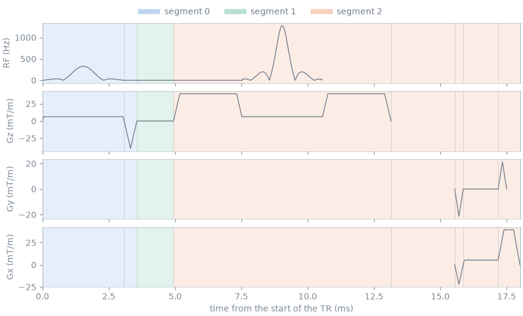

Note
Go to the end to download the full example code.
Segmentation of a sequence for the scanner#
The scope of this notebook is to convert Pulseq sequences into the scanner IR and to read what the conversion reduces them to: the repeating unit of each subsequence, the segments it is divided into, and how those counts scale with the length of the scan.
A Pulseq file lists every block a scan plays. A scanner interpreter is programmed with each distinct segment once and plays the scan as a stream of segment instances, so the quantity that determines its memory use is the number of segment definitions, not the number of blocks. The passes are described in The scanner IR.
Outline:
Repeating unit of a spin echo. One TR of a 2D spin echo and the segments it is divided into.
Scan length. Blocks, repetitions and segment definitions of a 2D gradient echo as the matrix and the slice count grow.
Subsequences. A chain of a reference prescan and an echo planar acquisition.
Repeating unit of a spin echo#
The sequence is pypulseqpp’s shipped 2D spin echo at its shortest TR,
written to a file and converted under the scanner limits. convert() writes the
IR cache beside the sequence file; summary() reports the
segmentation.
import tempfile
from pathlib import Path
import numpy as np
import pypulseqpp as pp
from pypulseqpp.sequences import se2D_sequence
from pulserver import ir
system = pp.Opts(max_grad=40, grad_unit="mT/m", max_slew=150, slew_unit="T/m/s")
work = Path(tempfile.mkdtemp())
seq = se2D_sequence(n_x=64, n_y=64, tr=None)
seq.write(work / "se2d.seq")
cache = ir.convert(work / "se2d.seq", system)
report = ir.summary(work / "se2d.seq", system)
unit = report["subsequences"][0]
print(f"{seq.num_blocks} blocks in the file; cache {cache.name}")
print(
f"repeating unit: {unit['tr_size']} blocks, TR {unit['tr_duration_us'] / 1e3:.2f} ms, "
f"played {unit['num_trs']} times"
)
for index, segment in enumerate(report["segments"]):
first = segment["start_block"] + 1
last = segment["start_block"] + segment["num_blocks"]
kind = "pure delay" if segment["pure_delay"] else "events"
print(
f"segment {index}: blocks {first}-{last}, "
f"{segment['duration_us'] / 1e3:.2f} ms, {kind}"
)
576 blocks in the file; cache se2d.pseg
repeating unit: 9 blocks, TR 18.02 ms, played 64 times
segment 0: blocks 1-2, 3.56 ms, events
segment 1: blocks 3-3, 0.02 ms, pure delay
segment 2: blocks 4-8, 12.02 ms, events
The repeating unit is nine blocks: the excitation with its slice-selection gradient (1) and rephaser (2), a delay (3), the refocusing pulse (4), a second delay (5), the phase-encoding and readout prewinders (6), the readout with the ADC (7), the rewinders (8), and the delay that completes the TR (9). The conversion divides it into three segment definitions, each starting at a block boundary where every gradient is zero. A pure delay has no events, so every pure delay is an instance of one definition, played with its own duration: block 9 is an instance of segment 1, whose listed duration is that of block 3.

Scan length#
The same conversion over the shipped 2D gradient echo, with a growing phase-encoding matrix and slice count. The number of blocks and the number of repetitions scale with the scan; the segment definitions do not, because every repetition plays the same waveform shapes with a different phase-encoding amplitude.
from pypulseqpp.sequences import gre2D_sequence
rows = []
for n_y, n_slices in ((64, 1), (128, 1), (256, 1), (256, 4)):
path = work / f"gre_{n_y}_{n_slices}.seq"
gre = gre2D_sequence(n_x=64, n_y=n_y, n_slices=n_slices, tr=None)
gre.write(path)
result = ir.summary(path, system)
rows.append((n_y, n_slices, gre.num_blocks, result))
ny slices blocks repetitions segments
64 1 480 80 2
128 1 864 144 2
256 1 1632 272 2
256 4 6528 1088 2
Subsequences#
pypulseqpp’s echo planar application writes a reference prescan, one volume
with the phase-encoding direction reversed, before the imaging sequence. The
two are separate files linked by the NextSequence definition, and the
conversion reads the chain as the subsequences of one scan.
from pypulseqpp.sequences.sequence.epi2D_sequence import Epi2DApp
epi = Epi2DApp(system, n_x=64, n_y=64)
files = epi.write(work / "epi.seq", offline=False)
print([Path(f).name for f in ir.chain(files[0])])
report = ir.summary(files[0], system)
for index, subsequence in enumerate(report["subsequences"]):
print(
f"subsequence {index}: {subsequence['tr_size']} blocks per repetition, "
f"{subsequence['num_trs']} repetitions"
)
print(f"segment definitions over the chain: {report['num_segments']}")
['epi.seq', 'epi_main.seq']
subsequence 0: 72 blocks per repetition, 3 repetitions
subsequence 1: 72 blocks per repetition, 3 repetitions
segment definitions over the chain: 2
Segment definitions are deduplicated across subsequences as well as within one. The reference prescan reverses the sign of the phase-encoding gradients, which is an amplitude of each instance rather than part of a definition, and both subsequences are played from the same two definitions.
Total running time of the script: (0 minutes 0.527 seconds)